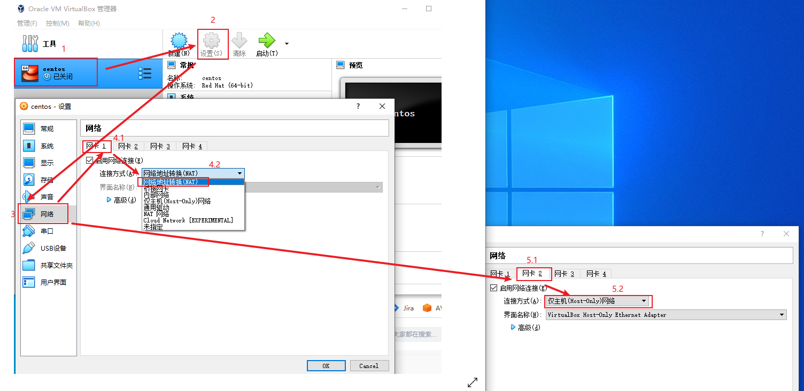
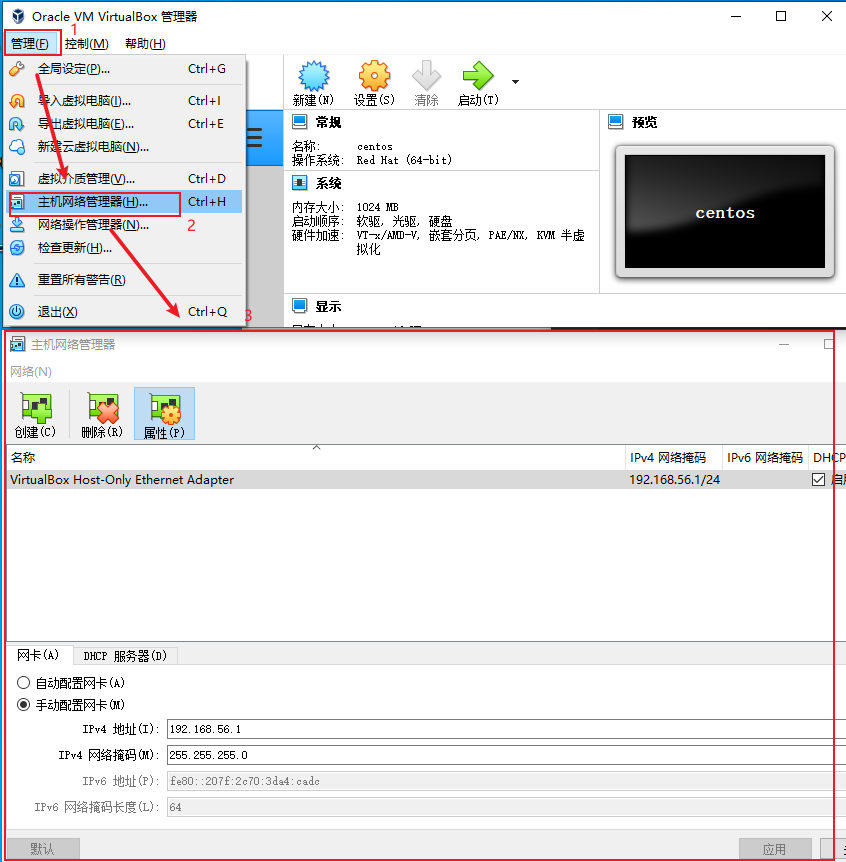

常用软件
| 名称 | 描述 |
|---|---|
| snipaste | 截图 |
| screentogif | 截图 |
| wox | 搜索, 查找 |
| Q-dir | 文件夹管理 |
| 7z | 解压 |
| quicklook | 快速预览 |
| potplayer | 视频 |
| obs | 直播, 录屏 |
virtualbox网络配置
使用nat和host-only实现
- nat(虚拟机访问互联网，使用10.0.2.x段)
- host-only(虚拟机和主机互相通信，使用192.168.56.x段)

进入虚拟机,使用ip addr查看, 如果未开启需要进入配置文件, 修改onboot参数, 配置文件在:
/etc/etc/sysconfig/network-scripts/
两个网卡
ifcfg-enp0s3对应natifcfg-enp0s8对应host-only
如果需要, 再给host-only配置静态地址.
默认host-only网络的配置在中
